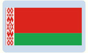
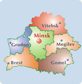

|
Государственный флаг Республики Беларусь
Государственный флаг Республики Беларусь является символом государственного суверенитета Республики Беларусь, представляет собой прямоугольное полотнище, состоящее из двух горизонтально расположенных цветных полос: верхней - красного цвета шириной в 2/3 и нижней - зеленого цвета в 1/3 ширины флага. Около древка вертикально расположен белорусский национальный орнамент красного цвета на белом поле, составляющий 1/9 длины флага. Отношение ширины флага к его длине - 1:2. Флаг крепится на древке (флагштоке), которое окрашивается в золотистый цвет.

Государственный герб Республики Беларусь
Государственный герб Республики Беларусь является символом государственного суверенитета Республики Беларусь, представляет собой зеленый контур Республики Беларусь в золотых лучах солнца над земным шаром. Сверху контура находится пятиконечная красная звезда. Герб обрамляет венок из золотых колосьев, переплетенных справа цветками клевера, слева - льна. Колосья обвиты красно-зеленой лентой, на которой снизу сделана надпись золотом: "Рэспублiка Беларусь".

Государственный гимн Республики Беларусь
У адпаведнасцi з артыкулам 19 Канстытуцыi Рэспублiкi Беларусь Дзяржаўны сцяг, Дзяржаўны герб i Дзяржаўны гiмн з`яўляюцца сiмваламi яе дзяржаўнага суверэнiтэту.
У якасцi Дзяржаўнага гiмна Рэспублiкi Беларусь Прэзiдэнт краiны зацвердзiў твор на музыку Н.Сакалоўскага i словы М.Клiмковiча, У.Карызны.
|